Capítulo 13. Geometría del espacio métrico
Los tres capítulos anteriores construyeron el vector: la idea de comparar por proximidad (capítulo 10), la representación densa que captura el significado (capítulo 11) y el codificador neuronal que la produce con calidad (capítulo 12). En todos ellos se ha invocado, una y otra vez, una palabra sin definirla del todo: cerca. Se ha dicho que buscar es encontrar los vectores más próximos, que dos cosas parecidas quedan cerca, que el coseno mide el parecido. Pero ¿qué es, exactamente, la cercanía? Hay más de una forma de medirla, no todas dicen lo mismo, y el espacio de alta dimensión donde viven los embeddings se comporta de maneras profundamente contraintuitivas. Este capítulo —el último teórico antes de construir el sistema— estudia esa geometría: las distancias, el efecto de la normalización y las rarezas de la alta dimensión.
No es un capítulo accesorio, sino el que fija la primera decisión de diseño de cualquier base de datos vectorial: qué métrica usar. Elegir mal la distancia hace que la búsqueda devuelva lo que no es, por bueno que sea el codificador y por rápido que sea el índice. Y entender las propiedades de la alta dimensión —por qué las distancias se concentran, por qué casi todo el volumen vive en la superficie, por qué surgen «hubs»— es lo que explica por qué buscar el vecino más próximo a escala es difícil, y por qué la cuarta parte necesita índices aproximados en lugar de comparar contra todos. La geometría es, en el fondo, el terreno sobre el que se levantará toda la ingeniería que viene.
Merece la pena detenerse en por qué este capítulo es la bisagra de todo el libro. La primera mitad de la obra vivía bajo el signo del igual a: dos filas coincidían si compartían una clave, dos documentos se encontraban si contenían el mismo término, y la maquinaria —índices B-tree, índices invertidos, hashes— estaba toda al servicio de la coincidencia exacta. La segunda mitad cambia de régimen al cercano a: dos textos se parecen si sus vectores apuntan en direcciones afines, aunque no compartan una sola palabra. Ese salto, del igual al cercano, es el hilo conductor del libro entero, y es aquí donde se formaliza: la «cercanía» deja de ser una metáfora y se convierte en una distancia concreta, medible, con propiedades que se pueden estudiar. Sin este capítulo, el «cercano a» sería un eslogan; con él, es ingeniería.
Como siempre, la geometría se mide. El módulo de la práctica —numpy, CPU— compara las tres distancias sobre los mismos datos, demuestra que la normalización reconcilia algunas de ellas, y reproduce los fenómenos de la alta dimensión: la concentración de las distancias, la casi-ortogonalidad, el volumen que huye a la cáscara, los hubs que emergen. El lector saldrá con el criterio para elegir métrica —coseno, euclídea o producto interno— y con la intuición, calibrada por las medidas, de por qué el espacio de los embeddings no se comporta como el espacio de tres dimensiones en que vivimos. Ese criterio y esa intuición son lo que la cuarta parte da por supuesto.
Las distancias
Medir el parecido entre dos vectores es medir, de algún modo, lo «juntos» que están, y hay tres formas de uso común, que no siempre coinciden (figura 13.1). La distancia euclídea (o \(L_2\)) es la más intuitiva: la longitud del segmento recto que une las puntas de los dos vectores, \(\lVert a-b\rVert = \sqrt{\sum_i (a_i-b_i)^2}\). La similitud coseno mide el ángulo entre los vectores, \(\cos\theta = (a\cdot b)/(\lVert a\rVert\,\lVert b\rVert)\), ignorando sus longitudes. Y el producto interno (o producto escalar) es \(a\cdot b = \sum_i a_i b_i = \lVert a\rVert\,\lVert b\rVert\cos\theta\), que combina el ángulo y las longitudes (listado 13.1).
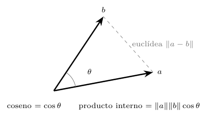
import numpy as np
euclidea = np.linalg.norm(a - b) # longitud del segmento
producto = a @ b # angulo y longitudes
coseno = (a @ b) / (np.linalg.norm(a) * np.linalg.norm(b)) # anguloListado 13.1. Las tres medidas de parecido entre dos vectores.
La diferencia clave entre ellas es qué hacen con la norma (la longitud) de los vectores. El coseno la ignora por completo: solo le importa la dirección, así que dos vectores que apuntan al mismo sitio tienen coseno \(1\) aunque uno mida diez veces más que el otro. La euclídea y el producto interno, en cambio, sí dependen de la norma. Cuándo importa esa diferencia es la primera pregunta de diseño.
Un ejemplo a mano
Conviene ver los números antes de las gráficas, porque toda la intuición del capítulo cabe en un caso de dos dimensiones que se calcula con lápiz. Sea la consulta \(q=(1,\,0)\) —un vector que apunta al este, de norma uno— y dos candidatos: \(u=(10,\,1)\), que apunta casi al este pero es largo, y \(v=(0{,}5,\,0{,}5)\), que apunta a \(45^\circ\) y es corto. La pregunta «¿cuál se parece más a \(q\)?» tiene dos respuestas distintas según la métrica, y eso es justo lo que hay que entender.
El coseno mira solo la dirección. La de \(u\) casi coincide con la de \(q\) (apenas un grado de diferencia), así que \(\cos(q,u)=10/\sqrt{101}\approx 0{,}995\); la de \(v\) está a \(45^\circ\), así que \(\cos(q,v)=0{,}5/\sqrt{0{,}5}\approx 0{,}707\). Por el coseno, gana \(u\). La euclídea mira la posición en el plano: \(u\) está lejísimos de \(q\) —\(\lVert q-u\rVert=\sqrt{81+1}=\sqrt{82}\approx 9{,}06\), arrastrado por su norma— mientras que \(v\) está a un paso —\(\lVert q-v\rVert=\sqrt{0{,}25+0{,}25}\approx 0{,}707\)—. Por la euclídea, gana \(v\). El producto interno, que pesa el ángulo por las longitudes, da \(q\cdot u=10\) y \(q\cdot v=0{,}5\): como el coseno, prefiere a \(u\), y por goleada (tabla 13.1).
| Candidato | norma | coseno | euclídea | prod. interno |
|---|---|---|---|---|
| \(u=(10,\,1)\) | \(10{,}05\) | \(\mathbf{0{,}995}\) | \(9{,}06\) | \(\mathbf{10{,}0}\) |
| \(v=(0{,}5,\,0{,}5)\) | \(0{,}71\) | \(0{,}707\) | \(\mathbf{0{,}707}\) | \(0{,}5\) |
Ese desacuerdo —coseno y producto interno por un lado, euclídea por otro— no es un accidente del ejemplo: es la consecuencia inevitable de que las normas difieran. Si se normalizan los tres vectores a longitud uno antes de medir, el desacuerdo desaparece, como se verá en la sección 13.3. Y nótese de paso que coseno y producto interno coinciden aquí en el ranking pero no en la escala: el producto interno premia la norma alta de \(u\), de modo que en cuanto hubiera un tercer candidato con la dirección de \(v\) pero norma enorme, podría adelantar a \(u\) por producto interno sin hacerlo por coseno. Tres medidas, tres criterios; la elección es de diseño, no de gusto.
Si todos los vectores tienen la misma norma, las tres medidas ordenan igual: con longitudes fijas, solo varía el ángulo, y las tres son funciones del ángulo. Pero en cuanto las normas difieren, se separan, y la práctica lo mide (figura 13.2). Partiendo de vectores de igual norma —donde el desacuerdo es cero— y aumentando la variabilidad de las normas, el ranking de los diez vecinos más próximos según la euclídea y según el producto interno se aleja cada vez más del que da el coseno: con normas muy dispares, hasta tres cuartas partes del top-10 difieren. La elección de métrica, lejos de ser un detalle, cambia qué documentos se consideran los más parecidos.
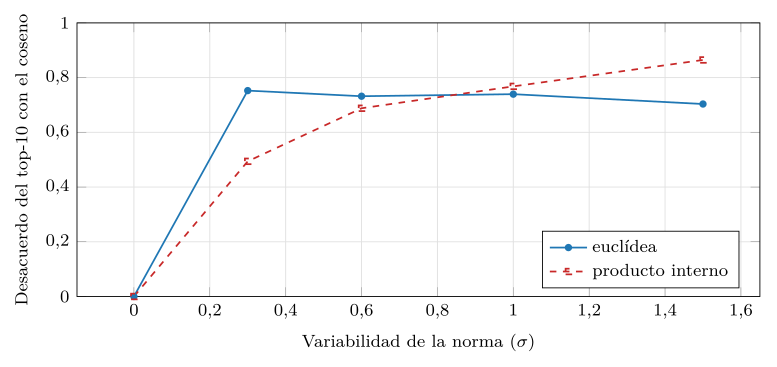
src/cap13_distancias.py.Si las tres medidas difieren por la norma, la pregunta es qué significa esa norma, porque de ahí sale cuál usar. En muchos embeddings la norma de un vector codifica información: puede reflejar la frecuencia o la importancia de un término, la longitud de un documento, o la confianza del modelo en su representación —un texto claro y rico produce un vector de norma mayor que uno breve o ambiguo—. Cuando la norma lleva esa señal y se quiere usar, el producto interno es la métrica adecuada, porque premia a los vectores largos: en una recomendación, un producto popular (norma alta) sube en el ranking frente a otro igual de afín pero menos popular. Esa búsqueda —ordenar por producto interno— tiene nombre propio, MIPS (maximum inner product search), y es la que usan muchos sistemas de recomendación (figura 13.3).
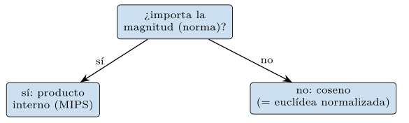
Cuando, en cambio, la norma es ruido —o no se quiere que pese— y solo importa la dirección (el significado), el coseno es la elección, y es la más común en búsqueda semántica de texto: que un documento sea largo no debe hacerlo más relevante. La regla práctica es directa: el coseno cuando importa de qué trata el vector, el producto interno cuando importa además cuánto pesa. Y la euclídea, como se verá en la sección siguiente, se vuelve equivalente al coseno en cuanto se normaliza, de modo que el verdadero eje de decisión es uno solo: usar la norma o no usarla.
Más familias de distancias
Otras familias: de Minkowski a los conjuntos
La euclídea no es la única distancia «de segmento». Pertenece a la familia \(L_p\), las distancias de Minkowski, \(\lVert a-b\rVert_p = (\sum_i |a_i-b_i|^p)^{1/p}\): para \(p=2\) es la euclídea, para \(p=1\) es la Manhattan (la suma de las diferencias absolutas, como recorrer una cuadrícula de calles), y en el límite \(p\to\infty\) es la Chebyshev (la mayor diferencia en una sola coordenada) (listado 13.2). En baja dimensión la elección entre ellas importa poco; en alta dimensión, curiosamente, las distancias con \(p\) pequeño —incluso fraccionario— discriminan algo mejor, un efecto relacionado con la concentración que la sección 13.4 estudia (Aggarwal et al. 2001). Para los embeddings, sin embargo, el debate práctico se reduce casi siempre a coseno frente a producto interno; la euclídea aparece, normalizada, como cara del coseno.
def minkowski(a, b, p):
return (np.abs(a - b) ** p).sum() ** (1 / p)
# p=1: Manhattan p=2: euclidea p->inf: Chebyshev (max|a-b|)Listado 13.2. La familia de distancias de Minkowski: Manhattan, euclidea y Chebyshev como casos de un mismo parametro p.
La forma más vívida de ver en qué se diferencian es dibujar su bola unidad: el conjunto de puntos a distancia exactamente uno del origen (figura 13.4). Para la euclídea es el círculo de toda la vida; para la Manhattan es un rombo —girando \(45^\circ\), con las puntas en los ejes—; para la Chebyshev es un cuadrado. La misma frase «a distancia uno» dibuja figuras distintas, y por eso la elección de \(p\) cambia qué puntos quedan «dentro» de un radio dado. Con un ejemplo concreto se ve la jerarquía: para \(a=(0,0)\) y \(b=(3,4)\), la Manhattan da \(|3|+|4|=7\), la euclídea \(\sqrt{9+16}=5\) y la Chebyshev \(\max(3,4)=4\). Siempre se cumple \(L_\infty\le L_2\le L_1\): cuanto mayor es \(p\), más domina la coordenada más grande y menor sale la distancia.
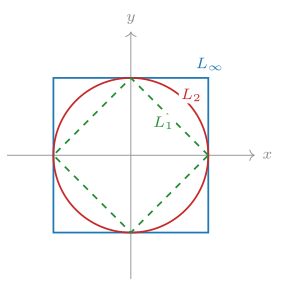
Reunir las medidas en un módulo deja a la vista que todas comparten una estructura —restar, combinar, agregar— y que el coseno es la única que normaliza (listado 13.3). Tenerlas juntas hace fácil cambiar de criterio en un experimento y comparar, que es lo que hace la práctica del capítulo.
import numpy as np
def euclidea(a, b):
return np.sqrt(((a - b) ** 2).sum()) # L2: el segmento
def manhattan(a, b):
return np.abs(a - b).sum() # L1: la cuadricula
def chebyshev(a, b):
return np.abs(a - b).max() # L_inf: la mayor coord.
def producto(a, b):
return float(a @ b) # angulo y longitudes
def coseno(a, b):
na, nb = np.linalg.norm(a), np.linalg.norm(b)
return float(a @ b) / (na * nb) # solo el anguloListado 13.3. Las medidas de parecido reunidas en un modulo: todas restan y agregan; solo el coseno divide por las normas.
Las tres distancias anteriores —y la familia \(L_p\)— suponen vectores densos de números reales, que es la representación de los capítulos 11 y 12. Pero la primera parte de la travesía vivía en lo disperso: las bolsas de palabras y los índices invertidos del capítulo 10, donde un documento es un conjunto de términos presentes o ausentes. Para esa clase de datos hay medidas propias que conviene tener a mano, porque la elección de métrica también depende de la representación, no solo de la aplicación.
La similitud de Jaccard compara dos conjuntos por el tamaño de su intersección dividido por el de su unión, \(J(A,B)=|A\cap B|/|A\cup B|\): cuántos términos comparten frente a cuántos términos distintos tienen en total. Vale uno si son idénticos y cero si no comparten nada, y es la medida natural cuando lo que importa es la coincidencia de elementos y no su frecuencia —detección de duplicados, solapamiento de etiquetas, parecido de conjuntos de términos—. La distancia de Hamming, por su parte, cuenta en cuántas posiciones difieren dos vectores binarios de la misma longitud, y es la medida de los códigos y las huellas digitales: dos documentos con huellas binarias parecidas difieren en pocos bits (listado 13.4).
def jaccard(a, b):
# a, b: conjuntos de terminos (presencia, no frecuencia)
inter = len(a & b)
union = len(a | b)
return inter / union if union else 0.0 # 1 = identicos
def hamming(a, b):
# a, b: vectores binarios de igual longitud
return int((a != b).sum()) # bits que difierenListado 13.4. Medidas para datos dispersos o binarios: Jaccard sobre conjuntos, Hamming sobre vectores binarios.
La conexión con lo ya visto es directa: la similitud coseno entre dos bolsas de palabras binarias —unos y ceros según presencia— es, salvo un factor, pariente cercana de la Jaccard, y por eso en el capítulo 10 el coseno sobre TF-IDF y la intuición de «cuántos términos comparten» apuntaban en la misma dirección. La diferencia con los embeddings densos es de fondo: en lo disperso, dos documentos solo se parecen si comparten exactamente los mismos términos —el «igual a» del título del libro—; en lo denso, pueden parecerse aunque no compartan ninguna palabra, porque el parecido vive en la dirección del vector —el «cercano a»—. La métrica adecuada cambia con la representación, y este capítulo se ocupa sobre todo de la densa, que es la que la cuarta parte indexa.
Adaptar la distancia a los datos: de Mahalanobis a aprenderla
Hay un supuesto callado en la euclídea que conviene sacar a la luz: trata todas las coordenadas por igual, como si midieran lo mismo y fueran independientes. Pero no siempre es así. Si una coordenada varía en un rango de miles y otra entre cero y uno, la primera domina la distancia y la segunda no cuenta; y si dos coordenadas están correlacionadas —se mueven juntas—, la euclídea las cuenta dos veces. La distancia de Mahalanobis corrige ambos defectos midiendo la distancia tras descontar la escala y la correlación de los datos, mediante la matriz de covarianza \(\Sigma\): \(d_M(a,b)=\sqrt{(a-b)^\top\Sigma^{-1}(a-b)}\) (listado 13.5).
def mahalanobis(a, b, cov):
delta = a - b
inv = np.linalg.inv(cov) # descuenta escala y correlacion
return float(np.sqrt(delta @ inv @ delta))
# con cov = identidad, Mahalanobis se reduce a la euclideaListado 13.5. Distancia de Mahalanobis: mide tras descontar la escala y la correlacion de los datos (la matriz de covarianza).
Intuitivamente, Mahalanobis estira y rota el espacio para que los datos queden «redondos» —varianza uno en todas las direcciones y sin correlación— y entonces mide la euclídea de siempre. Cuando la covarianza es la identidad —coordenadas independientes y de igual escala— coincide exactamente con la euclídea, de modo que la euclídea es el caso particular de Mahalanobis sobre datos ya «redondos». En la práctica de los embeddings rara vez se usa Mahalanobis directamente —es cara: exige estimar e invertir una matriz de covarianza grande— pero su idea reaparece disfrazada: normalizar cada coordenada, blanquear (whiten) los vectores antes de indexarlos, o aprender una transformación lineal que mejore las distancias son todas variantes de «descontar la estructura antes de medir». Es la misma lección de la sección anterior vista desde el otro lado: la métrica adecuada depende de la forma de los datos.
Si la métrica adecuada depende de los datos, el paso natural —y el que dio el deep learning del capítulo 12— es dejar de elegirla a mano y pasar a aprenderla. En vez de fijar coseno o Mahalanobis, se entrena el codificador para que la distancia que interesa salga directamente: que los pares que deben parecerse queden cerca y los que no, lejos. Es el aprendizaje de métrica (metric learning), y su forma más conocida es la pérdida de tripletes: para un ancla, un ejemplo positivo (que debe estar cerca) y uno negativo (que debe estar lejos), se penaliza que el positivo no esté más cerca que el negativo por un margen (listado 13.6).
def perdida_triplete(ancla, pos, neg, margen=0.2):
d_pos = np.linalg.norm(ancla - pos) # debe ser pequena
d_neg = np.linalg.norm(ancla - neg) # debe ser grande
return max(0.0, d_pos - d_neg + margen) # 0 si pos mas cerca + margenListado 13.6. Perdida de tripletes: empuja al positivo cerca del ancla y al negativo lejos, por un margen. La distancia se aprende, no se elige.
Esto cierra el círculo del capítulo. Las primeras secciones tomaban los vectores como dados y discutían qué distancia aplicarles; el aprendizaje de métrica le da la vuelta a la pregunta y moldea los vectores para que una distancia fija —casi siempre el coseno— funcione. Los codificadores de frases del capítulo 12 son, en el fondo, aprendices de métrica: se entrenan con pares de frases parecidas y distintas precisamente para que el coseno entre sus embeddings mida el parecido semántico. Por eso la elección de métrica en una base vectorial suele reducirse al coseno: no porque sea mágica, sino porque el codificador se entrenó para que lo fuera. La geometría y el aprendizaje se encuentran aquí: el modelo aprende a colocar los puntos donde la distancia que el índice sabe calcular dice la verdad.
Normalización y su efecto sobre la métrica
Normalizar un vector es dividirlo por su norma, \(\hat a = a/\lVert a\rVert\), lo que lo lleva a la esfera unidad: todos los vectores normalizados tienen longitud \(1\) y se diferencian solo en la dirección (figura 13.5). Es una operación barata y de enormes consecuencias geométricas, la principal de las cuales reconcilia dos de las tres métricas.
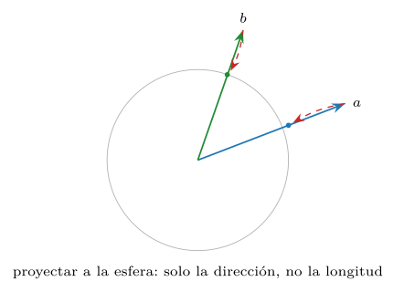
Coseno y euclídea son lo mismo en la esfera
La identidad clave es sencilla de deducir. Para dos vectores normalizados \(\hat a\) y \(\hat b\) (de norma \(1\)), el cuadrado de su distancia euclídea es \[\lVert \hat a - \hat b\rVert^2 = \lVert\hat a\rVert^2 + \lVert\hat b\rVert^2 - 2\,\hat a\cdot\hat b = 2 - 2\cos\theta .\] Es decir, la distancia euclídea entre vectores normalizados es una función monótona decreciente del coseno: a mayor coseno (más parecido), menor distancia euclídea. Por tanto, ordenar por coseno y ordenar por distancia euclídea sobre vectores normalizados da exactamente el mismo ranking. La práctica lo confirma de forma tajante (figura 13.6): sin normalizar, el acuerdo entre la euclídea y el coseno se desploma cuando las normas varían; tras normalizar, el acuerdo es perfecto —uno exacto— sea cual sea la variabilidad de las normas.
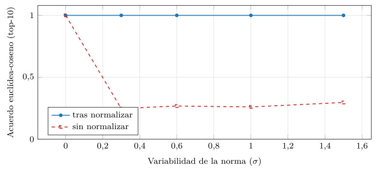
src/cap13_distancias.py.Conviene comprobar la identidad con números, porque es la bisagra de toda la sección. Retomemos los vectores del ejemplo a mano: \(u=(10,1)\) y \(v=(0{,}5,\,0{,}5)\), cuyas direcciones forman un ángulo cuyo coseno es \(\cos(u,v)=(5+0{,}5)/(\sqrt{101}\cdot\sqrt{0{,}5})\approx 0{,}774\). Normalizados quedan \(\hat u\approx(0{,}995,\,0{,}0995)\) y \(\hat v\approx(0{,}707,\,0{,}707)\), ambos de norma uno. Su distancia euclídea al cuadrado es \(\lVert\hat u-\hat v\rVert^2\approx(0{,}288)^2+(0{,}608)^2\approx 0{,}453\), y la fórmula predice \(2-2\cos\theta=2-2(0{,}774)=0{,}452\): coinciden salvo el redondeo. La distancia euclídea sobre la esfera es, literalmente, una reescritura del coseno (listado 13.7).
def normalizar(v):
return v / np.linalg.norm(v)
a, b = normalizar(u), normalizar(v)
izq = ((a - b) ** 2).sum() # ||a - b||^2
der = 2 - 2 * (a @ b) # 2 - 2 cos(a, b)
assert abs(izq - der) < 1e-12 # son lo mismo, siempreListado 13.7. Verificacion de la identidad: sobre la esfera, la euclidea al cuadrado es 2-2cos. Las dos columnas coinciden para cualquier par.
Esta equivalencia tiene una consecuencia práctica de peso para la cuarta parte: un índice construido para la distancia euclídea sirve, sin cambios, para el coseno, sin más que normalizar los vectores antes de indexarlos. Por eso muchas bases vectoriales normalizan por defecto y ofrecen «coseno» y «euclídea» como la misma operación bajo el capó. La normalización es el puente entre las dos métricas más usadas.
La decisión de normalizar es, por tanto, la misma que la de elegir métrica, vista del revés. Normalizar descarta la norma, así que se normaliza cuando la norma es ruido o no se quiere que pese —el caso habitual de la búsqueda semántica— y se deja sin normalizar cuando la norma lleva una señal que se quiere conservar —la popularidad en una recomendación, la confianza del modelo—. Normalizar antes de una búsqueda por producto interno la convierte, de hecho, en una búsqueda por coseno: se pierde justo lo que el producto interno aportaba. La regla, una vez más: normalizar si solo importa la dirección, no normalizar si importa la magnitud (listado 13.8).
def normalizar(v):
return v / np.linalg.norm(v)
# tras normalizar: ||a-b||^2 = 2 - 2 cos(a,b) -> mismo orden que el cosenoListado 13.8. Normalizar a la esfera unidad: tras ello, euclidea y coseno ordenan igual.
Una recuperación en miniatura
Vale la pena juntar todo lo anterior en una recuperación diminuta que se sigue a mano. Imaginemos tres «documentos» representados como vectores en el plano y una consulta \(q=(1,\,1)\) —que apunta en diagonal, de norma \(\sqrt2\)—. El documento \(d_1=(2,\,2)\) apunta justo igual que la consulta pero es el doble de largo; \(d_2=(1,\,0)\) apunta a \(45^\circ\) de ella y es corto; \(d_3=(5,\,4)\) es largo y apunta casi, pero no exactamente, como la consulta. ¿Cuál se recupera primero? Depende de la métrica, y de si se normaliza (tabla 13.2).
| Documento | coseno | euclídea (orden) | prod. interno |
|---|---|---|---|
| \(d_1=(2,2)\) | \(1{,}000\) | \(1{,}41\) (2.º) | \(4{,}0\) |
| \(d_2=(1,0)\) | \(0{,}707\) | \(1{,}00\) (1.º) | \(1{,}0\) |
| \(d_3=(5,4)\) | \(0{,}995\) | \(5{,}00\) (3.º) | \(9{,}0\) |
Léase la tabla despacio, porque cada columna cuenta una historia distinta. Por coseno, gana \(d_1\) (coseno exacto \(1\): misma dirección que \(q\)), seguido muy de cerca por \(d_3\) (\(0{,}995\), casi la misma dirección) y por último \(d_2\) (\(0{,}707\), a \(45^\circ\)). Por producto interno, gana \(d_3\) (\(9{,}0\)): aunque su dirección no es perfecta, su norma alta lo empuja al primer puesto —la magnitud manda—. Y por euclídea sin normalizar, gana \(d_2\) (\(1{,}0\) de distancia): es el más cercano en el plano, porque \(d_1\) y \(d_3\), al ser largos, quedan lejos de la consulta pese a apuntar parecido. Tres métricas, tres ganadores distintos sobre los mismos tres documentos.
La moraleja llega al normalizar. Si se llevan los cuatro vectores a la esfera unidad, \(d_1\) y \(q\) se vuelven el mismo punto (dirección idéntica), de modo que la euclídea sobre la esfera coloca a \(d_1\) el primero, igual que el coseno: las dos métricas se reconcilian, como predice \(\lVert\hat a-\hat b\rVert^2=2-2\cos\theta\). La decisión de diseño —normalizar o no, y qué métrica— no es teórica: cambia literalmente qué documento ve primero el usuario. Esta miniatura es el capítulo entero en tres vectores.
Propiedades de los espacios de alta dimensión
Los embeddings viven en espacios de cientos o miles de dimensiones, y la intuición geométrica —formada en tres dimensiones— falla estrepitosamente allí. Esta sección reúne los fenómenos contraintuitivos de la alta dimensión que más afectan a la búsqueda por similitud, todos medidos. No son curiosidades: son la razón de ser de la ingeniería de la cuarta parte.
Las distancias se concentran
El fenómeno central, ya asomado en el capítulo 11, es la concentración de las distancias: al crecer la dimensión, la distancia del punto más cercano y la del más lejano se igualan (figura 13.7). La práctica mide el contraste —la diferencia entre la distancia máxima y la mínima de un punto al resto, dividida por la mínima— al crecer la dimensión (figura 13.8): de un contraste de más de cien en dimensión dos baja a una quinta parte en dimensión quinientos. Cuando el más cercano y el más lejano están casi a la misma distancia, la pregunta «¿cuál es el más parecido?» pierde nitidez, porque la respuesta es «casi todos por igual». Es el resultado de Beyer et al. (1999), y la amenaza de fondo de toda búsqueda por proximidad a escala.
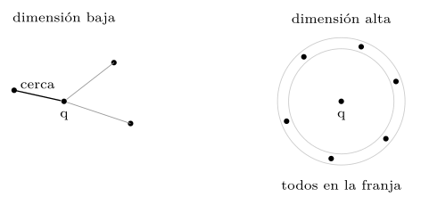
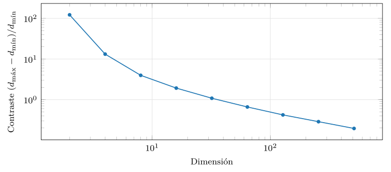
src/cap13_distancias.py.Que las distancias se concentren no es magia, sino la ley de los grandes números disfrazada. La distancia euclídea al cuadrado entre dos puntos es una suma de las diferencias al cuadrado coordenada a coordenada: \(\lVert a-b\rVert^2=\sum_{i=1}^{d}(a_i-b_i)^2\). Cuando las coordenadas son independientes, esa suma de \(d\) términos parecidos crece, en promedio, proporcionalmente a \(d\), mientras que su variación relativa —cuánto se desvía un par de otro— crece solo como \(\sqrt{d}\). Al dividir, la dispersión relativa de la distancia decae como \(1/\sqrt{d}\): las distancias se aprietan alrededor de su media cada vez más al crecer la dimensión, y por eso la máxima y la mínima se acercan (listado 13.9).
for d in (2, 16, 128, 1024):
pts = rng.standard_normal((2000, d))
dist = np.linalg.norm(pts - pts[0], axis=1)
rel = dist.std() / dist.mean() # dispersion relativa
print(d, round(rel, 4)) # cae ~ 1/sqrt(d)Listado 13.9. La concentracion como ley de los grandes numeros: la dispersion relativa de las distancias decae como 1/raiz(d).
La práctica lo confirma midiéndolo (figura 13.9): la dispersión relativa de las distancias cae al crecer la dimensión siguiendo la misma pendiente que \(1/\sqrt{d}\) —la curva medida y la referencia teórica son paralelas en escala log-log—, con un desfase constante que solo depende de la distribución de los datos. Esa pendiente común es la firma de la ley de los grandes números: no es que las distancias se acorten, es que se aprietan unas contra otras alrededor de su valor típico, y por eso la máxima y la mínima —el más lejano y el más cercano— se vuelven indistinguibles.
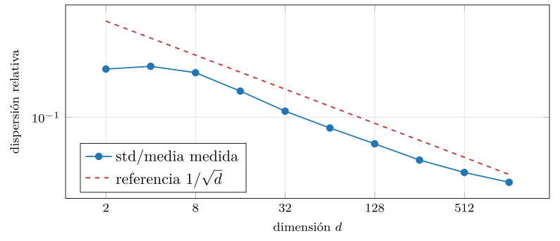
src/cap13_distancias.py.Dicho en palabras: en muchas dimensiones, cada par de puntos «promedia» tantas diferencias coordenada a coordenada que casi todos acaban con una distancia parecida a la típica; los muy cercanos y los muy lejanos se vuelven rarezas estadísticas. Es el mismo motivo por el que la media de mil tiradas de un dado varía mucho menos que una sola tirada. Y es también la razón profunda de que la casi-ortogonalidad y la concentración sean dos caras de lo mismo: si las direcciones se reparten uniformemente y cada coordenada aporta su grano, ni los ángulos ni las distancias dejan margen para destacar. La buena noticia, ya vista, es que los datos reales no tienen coordenadas independientes —están correlacionadas, estructuradas— y por eso escapan en parte a esta ley.
Casi todo es perpendicular y el volumen huye a la cáscara
El segundo fenómeno, pariente del primero, es que en alta dimensión dos vectores tomados al azar son casi siempre casi ortogonales. La práctica mide el coseno entre vectores aleatorios al crecer la dimensión (figura 13.10): tanto su media en valor absoluto como su desviación caen hacia cero —de un \(|\cos|\) medio de \(0{,}63\) en dimensión dos a \(0{,}04\) en dimensión quinientos—. En un espacio de dimensión alta hay «sitio» para muchísimas direcciones mutuamente casi perpendiculares, así que dos vectores cualesquiera rara vez se parecen por azar. Esto es, a la vez, una bendición —cabe colocar muchísimos conceptos distintos sin que se estorben— y una maldición —refuerza la concentración: si casi todo es perpendicular, casi todo está a una distancia parecida.
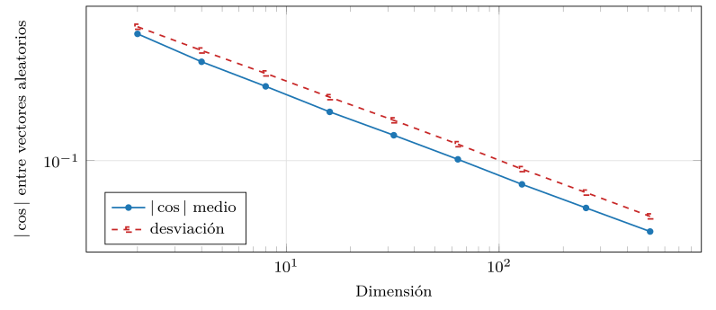
src/cap13_distancias.py.La casi-ortogonalidad tiene una consecuencia constructiva que la cuarta parte explota a fondo. Si dos direcciones tomadas al azar son casi perpendiculares, entonces una proyección aleatoria casi nunca confunde dos puntos distintos, y eso es justo lo que hacen las funciones de hashing sensible a la localidad (LSH) (Indyk y Motwani 1998): trocear el espacio con hiperplanos aleatorios de modo que los vectores parecidos caigan, con alta probabilidad, en el mismo cubo. Lo que en la concentración es una maldición —todo se parece a todo— en el hashing es una bendición —hay sitio de sobra para separar—. Es el mismo fenómeno visto con otra luz, y reaparecerá cuando se construyan los índices: la geometría que dificulta la búsqueda exacta es la que habilita la aproximada. La forma más simple de hashing por proyección aleatoria firma cada vector con el signo de su producto con unos cuantos vectores aleatorios: vectores parecidos comparten casi todos los signos, y la firma sirve de cubo (listado 13.10).
def firma_lsh(v, planos):
# planos: matriz (bits, d) de hiperplanos aleatorios
return tuple((planos @ v > 0).astype(int)) # un bit por plano
planos = rng.standard_normal((16, d)) # 16 bits de firma
firma_a = firma_lsh(a, planos)
firma_b = firma_lsh(b, planos)
# si a y b se parecen, sus firmas coinciden en casi todos los bitsListado 13.10. Hashing sensible a la localidad por hiperplanos aleatorios: la firma es el signo del producto con vectores al azar; los parecidos coinciden.
El tercer fenómeno es aún más extraño. En una bola de alta dimensión, casi todo el volumen está pegado a la superficie: el interior está, en términos relativos, vacío (figura 13.11). La razón es que el volumen crece con el radio elevado a la dimensión, así que la corona exterior —aunque fina— acumula casi todo. La práctica lo mide con la fracción del volumen que está en el 10 % más externo del radio, que es \(1-0{,}9^d\) (figura 13.12): en dimensión diez ya es el 65 %, y en dimensión cien, el 100 %. Dicho de otro modo: dos puntos aleatorios de una bola de alta dimensión están, casi seguro, ambos cerca de la superficie y lejos del centro y entre sí.
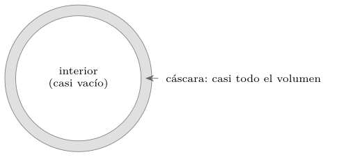
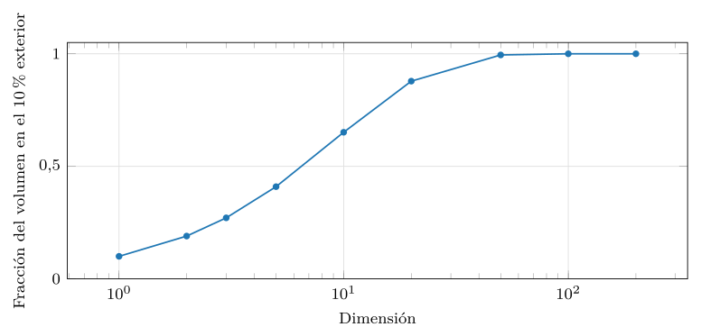
src/cap13_distancias.py.Relacionado con esto, el volumen de la bola unidad —la de radio \(1\)— hace algo sorprendente al crecer la dimensión (figura 13.13): aumenta hasta la dimensión cinco, donde alcanza un máximo, y a partir de ahí se desploma hacia cero. En dimensión veinte, la bola unidad tiene un volumen ínfimo. El espacio de alta dimensión es, en este sentido, casi todo «esquinas»: el cubo que contiene a la bola conserva volumen, pero la bola inscrita se encoge a nada. Es otra cara de que los datos no llenan el espacio —viven en una variedad de baja dimensión, como vimos en el capítulo 11—, y de por qué la reducción de dimensión es tan eficaz.
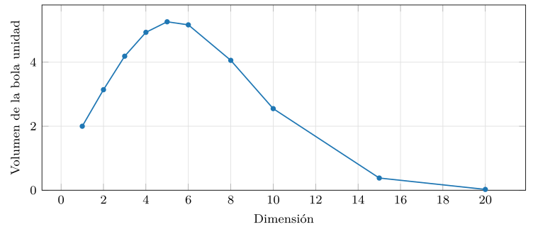
src/cap13_distancias.py.Conviene ver estos dos efectos en una tabla de números concretos, porque sorprenden más leídos que descritos (tabla 13.3). La fracción del volumen en el 10 % exterior, \(1-0{,}9^d\), pasa de un modesto 10 % en una dimensión a más del 99 % en cuarenta y cuatro; el volumen de la bola unidad, \(\pi^{d/2}/\Gamma(d/2+1)\), sube hasta un máximo de \(5{,}26\) en dimensión cinco y luego cae a una millonésima en dimensión treinta. Son la misma historia contada con dos varas de medir: el espacio de alta dimensión es casi todo frontera y casi nada interior.
| Dimensión \(d\) | Volumen en el 10 % exterior | Volumen de la bola unidad |
|---|---|---|
| 1 | \(0{,}10\) | \(2{,}00\) |
| 5 | \(0{,}41\) | \(5{,}26\) |
| 10 | \(0{,}65\) | \(2{,}55\) |
| 20 | \(0{,}88\) | \(0{,}026\) |
| 50 | \(0{,}99\) | \(\approx\!10^{-13}\) |
| 100 | \(1{,}00\) | \(\approx\!10^{-40}\) |
Los hubs, y por qué el coseno no es una métrica
El cuarto fenómeno es el más relevante para la búsqueda y el menos conocido: la hubness (Radovanović et al. 2010). En alta dimensión, la relación «ser vecino más próximo» deja de ser simétrica y equilibrada: ciertos puntos —los hubs— se convierten en el vecino más próximo de muchísimos otros, mientras otros —los anti-hubs— no son vecinos de nadie (figura 13.14). La práctica mide la asimetría de la distribución de la \(k\)-ocurrencia —cuántas veces cada punto aparece entre los \(k\) vecinos de los demás— al crecer la dimensión (figura 13.15): de una distribución casi simétrica en dimensión dos a una muy sesgada en dimensión alta, con hubs que son vecinos de más de doscientos puntos. La hubness distorsiona la búsqueda —los hubs aparecen como resultado de casi cualquier consulta, sean o no relevantes— y es un quebradero de cabeza real para los sistemas de recomendación y recuperación, que aplican correcciones específicas para mitigarla.
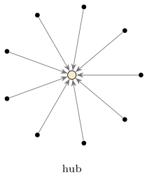
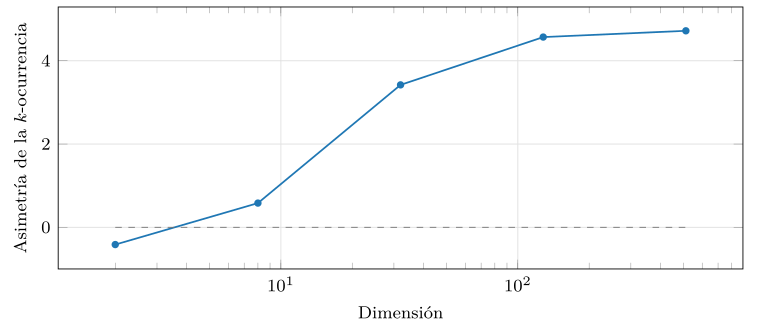
src/cap13_distancias.py.Frente a la hubness no hay que cruzarse de brazos: existen correcciones bien estudiadas. La más simple es exigir vecindad mutua —contar a dos puntos como vecinos solo si cada uno está entre los más próximos del otro—, lo que desactiva a los hubs, que son vecinos de muchos pero rara vez recíprocos. Otras técnicas reescalan las distancias localmente o las convierten en rangos para nivelar el terreno. Conviene saber que la hubness existe y se mide —la figura 13.15 la cuantifica— porque un sistema de recuperación que devuelve siempre los mismos pocos resultados, sea cual sea la consulta, probablemente esté sufriéndola sin que nadie la haya nombrado. Reconocer el síntoma es el primer paso para corregirlo. La corrección por vecindad mutua se programa en unas pocas líneas: aceptar a \(b\) como vecino de \(a\) solo si \(a\) también está entre los vecinos de \(b\) (listado 13.11).
def vecinos_mutuos(vecinos_de):
# vecinos_de[x]: conjunto de los k vecinos mas proximos de x
mutuos = {}
for a, vs in vecinos_de.items():
mutuos[a] = {b for b in vs if a in vecinos_de[b]}
return mutuos
# un hub aparece en muchas listas pero rara vez es correspondidoListado 13.11. Mitigar la hubness exigiendo vecindad mutua: b es vecino de a solo si a tambien lo es de b. Desactiva a los hubs, vecinos de muchos pero recibidos por pocos.
Una sutileza final, importante para los índices. No toda «distancia» es una métrica en el sentido matemático: una métrica debe cumplir la desigualdad triangular, \(d(a,c)\le d(a,b)+d(b,c)\), y muchos índices se apoyan en ella para podar el espacio de búsqueda. La «distancia coseno» definida como \(1-\cos\theta\) no cumple la desigualdad triangular —la práctica encuentra triples que la violan— así que no es una métrica verdadera (figura 13.16). La distancia angular, en cambio, definida como el ángulo mismo \(\arccos(\cos\theta)\) —la longitud del arco sobre la esfera—, sí es una métrica, y nunca viola el triángulo. La tabla 13.4 lo cuantifica. La distinción importa porque algunos índices exigen una métrica verdadera; con la distancia coseno hay que usar su forma angular o un índice que no dependa del triángulo.
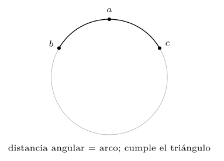
| Distancia | Violaciones del triángulo |
|---|---|
| Coseno (\(1-\cos\theta\)) | sí (ocurren) |
| Angular (\(\arccos\cos\theta\)) | ninguna |
Cómo la estructura salva la búsqueda
Hasta aquí, un panorama desolador: en alta dimensión las distancias se concentran, todo es perpendicular, el volumen huye y emergen hubs. Si así fuera siempre, la búsqueda por similitud sería inútil más allá de unas pocas dimensiones, y los embeddings de 768 o 1 536 dimensiones del capítulo anterior no servirían de nada. Pero hay un detalle decisivo que los experimentos anteriores ocultan: todos usan puntos uniformemente aleatorios, ruido sin estructura. Los datos reales no son ruido. Tienen estructura: se agrupan en cúmulos —temas, categorías, entidades— y viven en una variedad de dimensión mucho menor que la del espacio que los contiene, como se vio en el capítulo 11.
La práctica lo mide directamente, contrastando el mismo indicador —el contraste de distancias— sobre datos uniformes y sobre datos estructurados en diez cúmulos separados (figura 13.17). El resultado es contundente: mientras el contraste de los datos uniformes se desploma de más de cien en dimensión dos a menos de \(0{,}2\) en dimensión quinientos —la maldición en toda su crudeza—, el de los datos estructurados se mantiene por encima de cinco incluso en dimensión quinientos, casi treinta veces mayor. La estructura preserva el contraste: si los puntos relevantes están en el cúmulo de la consulta y el resto en otros cúmulos, la distancia al cúmulo propio sigue siendo netamente menor que la distancia a los demás, por alta que sea la dimensión.
src/cap13_distancias.py.¿Cuánta estructura tienen los datos reales? Una forma de medirlo es la dimensión intrínseca: cuántas direcciones de verdad hacen falta para describirlos, frente a las muchas del espacio que los contiene. La práctica la estima por análisis de componentes principales —cuántas componentes explican el 90 % de la varianza— sobre datos uniformes y sobre datos que viven en un subespacio de dimensión diez (figura 13.18). El contraste es nítido: los datos uniformes necesitan casi tantas componentes como dimensiones tiene el espacio —trescientas ochenta y nueve de quinientas doce—, mientras que los estructurados se describen con apenas nueve, por alta que sea la dimensión aparente. Es la variedad de baja dimensión del capítulo 11, medida: los datos reales habitan un pliegue delgado de un espacio enorme, y esa es exactamente la propiedad que la búsqueda y los índices aprovechan.
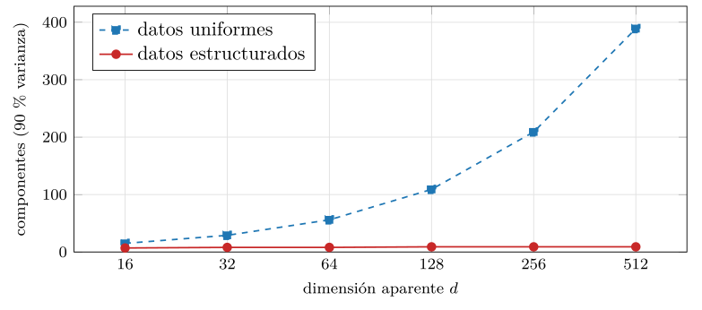
src/cap13_distancias.py.Esta es la conciliación entre la teoría sombría y la práctica funcional. La maldición de la dimensión es real —no es un mito— pero ataca al ruido, no a la señal. Los embeddings de un buen codificador no llenan uniformemente el espacio: lo pueblan de forma estructurada, con los textos parecidos agrupados y los distintos apartados. Por eso la búsqueda por proximidad sigue siendo útil con vectores de cientos de dimensiones, y por eso —importante para la cuarta parte— los índices aproximados, que explotan precisamente esa estructura agrupando vecinos, pueden encontrar los más próximos sin recorrer todo. Sin estructura no habría nada que indexar; con ella, la geometría vuelve a ser amigable.
Si los datos viven en una variedad de baja dimensión, cabe preguntar si se puede reducir la dimensión sin estropear las distancias —lo que aligeraría el almacenamiento y la búsqueda—. La respuesta, sorprendente y profunda, es que sí, y la da el lema de Johnson-Lindenstrauss (Johnson y Lindenstrauss 1984): una proyección aleatoria a un número de dimensiones sorprendentemente bajo conserva todas las distancias por pares con poco error, y ese número no depende de la dimensión de partida, solo de cuántos puntos hay y de cuánta distorsión se tolera. No hace falta ni mirar los datos: multiplicar por una matriz de números aleatorios basta.
La práctica lo comprueba proyectando puntos de dimensión quinientos a dimensiones cada vez menores y midiendo cuánto se distorsionan las distancias (figura 13.19). Con solo treinta y dos dimensiones de destino, la distorsión media es del 10 %; con ciento veintiocho, baja del 5 %. Es decir: se puede tirar tres cuartas partes de las dimensiones y conservar las distancias casi intactas (listado 13.12). El mecanismo es el reverso de la casi-ortogonalidad: como en alta dimensión hay sitio para muchísimas direcciones casi perpendiculares, una proyección aleatoria rara vez «aplasta» dos puntos distintos en el mismo sitio.
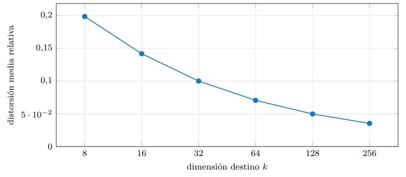
src/cap13_distancias.py.def proyectar(X, k, rng):
d = X.shape[1]
R = rng.standard_normal((d, k)) / np.sqrt(k) # matriz aleatoria
return X @ R # de d a k dimensiones
# las distancias por pares se conservan con poco error, sin mirar XListado 13.12. Proyeccion aleatoria de d a k dimensiones: una matriz de ruido escalada conserva las distancias (Johnson-Lindenstrauss).
Este resultado es el fundamento teórico de buena parte de la cuarta parte. Justifica que se almacenen los vectores reducidos —por proyección aleatoria, por PCA o por la propia capa final del codificador— sin arruinar la búsqueda; explica por qué la cuantización y la compresión de vectores funcionan; y conecta con la idea, ya vista, de que la dimensión intrínseca de los datos es mucho menor que la aparente. La alta dimensión castiga al ruido, pero a la señal se le puede quitar ropaje sin que pierda la forma.
De la geometría al índice
Antes de cerrar conviene hilar explícitamente lo que esta geometría implica para el sistema que viene, porque cada fenómeno de las secciones anteriores se traduce en una decisión de ingeniería de la cuarta parte. La geometría no es un preámbulo teórico: es el pliego de condiciones del índice.
La forma más simple de encontrar el vecino más próximo de una consulta es compararla con todos los vectores y quedarse con el menor: la búsqueda lineal o por fuerza bruta. Su coste es proporcional al número de vectores por la dimensión, \(O(n\cdot d)\), y para colecciones pequeñas es perfectamente razonable —es exacta y trivial de implementar (listado 13.13)—. El problema es la escala: con cientos de millones de vectores de mil dimensiones, cada consulta exige cientos de miles de millones de multiplicaciones, y eso, repetido por cada consulta de cada usuario, es inviable en milisegundos. La concentración de distancias agrava el cuadro: como en alta dimensión casi todos los puntos están a una distancia parecida, no hay un «cono» estrecho de candidatos al que limitarse, y muchas técnicas clásicas de poda —los árboles \(k\)-d y similares— degeneran a recorrer casi todo. La fuerza bruta es exacta pero no escala; los árboles exactos no sobreviven a la alta dimensión.
def vecino_mas_proximo(consulta, base):
# base: matriz (n, d) de vectores normalizados
sims = base @ consulta # n productos escalares
return int(sims.argmax()) # el de mayor coseno
# coste O(n*d): con n y d grandes, demasiado por consultaListado 13.13. Busqueda por fuerza bruta: exacta, simple y O(n*d). Correcta para colecciones pequenas; inviable a gran escala.
El producto interno no es una distancia, pero se puede convertir
Hay una incomodidad con el producto interno que afecta de lleno a los índices. La mayoría de los índices de vecindad —árboles, grafos, particiones— se construyen para distancias, que cumplen que un punto está a distancia cero de sí mismo y que la distancia crece al alejarse. El producto interno no es así: un vector no maximiza el producto interno consigo mismo (otro más largo en la misma dirección lo supera), y no cumple la desigualdad triangular. Buscar el máximo producto interno (MIPS) no es, por tanto, buscar el vecino más próximo en ninguna distancia, y eso complica reutilizar los índices.
El truco, elegante y muy usado, es convertir MIPS en una búsqueda por vecino más próximo euclídeo añadiendo una dimensión extra a cada vector (listado 13.14). Se aumenta cada vector de la base con una coordenada que compensa su norma —de modo que todos los aumentados queden a la misma norma— y la consulta con un cero. Tras la transformación, el vector de mayor producto interno con la consulta es exactamente el de menor distancia euclídea, y se puede usar cualquier índice euclídeo sin cambios. Es la misma idea de la normalización —llevar los vectores a una norma común— pero conservando la información de magnitud en la dimensión añadida en vez de tirarla.
def aumentar_base(base):
m = np.linalg.norm(base, axis=1).max()
extra = np.sqrt(m ** 2 - (base ** 2).sum(axis=1))
return np.hstack([base, extra[:, None]]) # norma comun = m
def aumentar_consulta(q):
return np.hstack([q, 0.0]) # la consulta lleva un 0
# ahora: argmax(producto interno) == argmin(distancia euclidea)Listado 13.14. Convertir MIPS en vecino mas proximo euclideo: una dimension extra iguala las normas y el de mayor producto pasa a ser el mas cercano.
Este truco es la razón de que muchas bases vectoriales ofrezcan «producto interno» como métrica aunque por dentro usen un índice euclídeo: lo reducen a vecino más próximo con la dimensión extra. Conviene conocerlo porque explica por qué, pese a que el producto interno «no es una distancia», los sistemas de recomendación que lo necesitan se construyen sobre la misma maquinaria que los de búsqueda semántica. La geometría se dobla para encajar en la ingeniería disponible.
Qué pide cada fenómeno al índice, y dónde cortar
La salida es renunciar a la exactitud perfecta: los índices aproximados de vecinos más próximos (ANN) devuelven casi siempre los verdaderos vecinos, a cambio de ser cientos de veces más rápidos. Y todo lo medido en este capítulo dicta cómo deben construirse (tabla 13.5). La estructura en cúmulos —lo que salva el contraste— es justo lo que explotan los índices basados en particionar el espacio o en tejer un grafo de vecindad: agrupan lo cercano para no mirar lo lejano. La reducción de dimensión de Johnson-Lindenstrauss justifica comprimir y cuantizar los vectores para que quepan en memoria. La equivalencia coseno-euclídea tras normalizar permite que un mismo índice sirva ambas métricas. Y la hubness obliga a correcciones específicas, porque si no los hubs contaminan todos los resultados. La geometría de este capítulo es, literalmente, la lista de requisitos del capítulo que viene.
| Propiedad geométrica | Consecuencia para el índice |
|---|---|
| Concentración de distancias | La poda exacta degenera; hace falta búsqueda aproximada (ANN). |
| Estructura en cúmulos | Se explota particionando el espacio o tejiendo grafos de vecindad. |
| Johnson-Lindenstrauss | Se pueden comprimir y cuantizar los vectores sin arruinar las distancias. |
| Coseno \(=\) euclídea (esfera) | Un mismo índice sirve ambas métricas si se normaliza. |
| El coseno no es métrica | Usar la forma angular o un índice que no dependa del triángulo. |
| Hubness | Hacen falta correcciones para que los hubs no contaminen los resultados. |
Una pregunta práctica que la geometría ilumina y que aparece en todo sistema real: además de ordenar por parecido, a menudo hace falta un umbral —¿a partir de qué coseno dos textos son «el mismo tema»? ¿de qué similitud para abajo se descarta un resultado?—. La tentación es fijar un número redondo —«coseno mayor que \(0{,}8\)»— y olvidarse, pero la casi-ortogonalidad de la alta dimensión advierte de que ese número no es universal. Como entre vectores aleatorios el coseno se concentra cerca de cero, un coseno de \(0{,}3\) que parecería bajo puede ser, en dimensión alta, una señal fortísima de parecido real, muy por encima del ruido (listado 13.15).
ruido = []
for _ in range(10000):
a, b = rng.standard_normal(d), rng.standard_normal(d)
ruido.append(a @ b / (norm(a) * norm(b)))
umbral = np.mean(ruido) + 4 * np.std(ruido) # 4 sigmas sobre el ruido
# todo coseno por encima del umbral es parecido genuino, no azarListado 13.15. Calibrar el umbral frente al ruido: medir la distribucion del coseno entre pares aleatorios y fijar el umbral muy por encima de ella.
La forma honesta de fijar el umbral es, por tanto, relativa al ruido: medir la distribución del parecido entre pares que se sabe no relacionados y poner el listón varias desviaciones por encima, no en un número absoluto traído de otra colección. El umbral depende de la dimensión, del codificador y de los datos, y trasplantarlo de un sistema a otro es una fuente clásica de errores —un umbral que en un modelo de 768 dimensiones separa bien, en otro de 384 deja pasar ruido o descarta aciertos—. La geometría de este capítulo no solo dice cómo ordenar; también dice dónde cortar.
Práctica: la geometría, medida
Las gráficas de este capítulo salen de src/cap13_distancias.py —numpy, sin GPU—, que compara las tres distancias y reproduce los fenómenos de la alta dimensión. El núcleo es simple: generar puntos al azar, medir, y observar cómo cambia el comportamiento con la dimensión y con la variabilidad de las normas (listado 13.16). La concentración, por ejemplo, es una sola línea —el contraste entre la distancia máxima y la mínima— evaluada a dimensiones crecientes.
dist = np.linalg.norm(pts - q, axis=1)
contraste = (dist.max() - dist.min()) / dist.min() # -> 0 al crecer d
a, b = rng.standard_normal(d), rng.standard_normal(d)
cos = a @ b / (norm(a) * norm(b)) # -> 0 al crecer dListado 13.16. El nucleo de las medidas: el contraste de distancias y el coseno entre vectores aleatorios, segun la dimension.
El módulo y el buscador en miniatura
El módulo sigue la misma estructura que el resto del libro: funciones de medida puras, una por fenómeno, que escriben sus datos en un fichero .dat que las gráficas leen, y una función main que las ejecuta todas con una semilla fija para que el resultado sea reproducible bit a bit (listado 13.17). No hay estado oculto ni dependencia del orden: cada simulación genera sus propios datos sintéticos, mide y guarda. Reejecutar el módulo reproduce exactamente las once gráficas y la tabla 13.6 de este capítulo.
SEMILLA = 13
def simular_metricas(): ... # divergencia con la norma
def simular_normalizacion(): ... # reconciliacion en la esfera
def simular_concentracion(): ... # el contraste cae con d
def simular_cosenos(): ... # casi-ortogonalidad
def simular_cascara(): ... # el volumen huye a la corona
def simular_volumen(): ... # la bola unidad se encoge
def simular_hubness(): ... # emergen hubs y anti-hubs
def simular_triangulo(): ... # coseno no es metrica
def simular_dispersion(): ... # std/media ~ 1/raiz(d)
def simular_estructura(): ... # la estructura salva el contraste
def simular_jl(): ... # reducir dimension sin perder
def simular_intrinseca(): ... # dimension intrinseca por PCA
def main():
for sim in (simular_metricas, simular_normalizacion,
simular_concentracion, simular_cosenos,
simular_cascara, simular_volumen,
simular_hubness, simular_triangulo,
simular_dispersion, simular_estructura,
simular_jl, simular_intrinseca):
sim() # cada una escribe su .dat
demostracion(15) # la muestra inspeccionableListado 13.17. La organizacion del modulo: una funcion de medida por fenomeno, todas con la misma semilla, orquestadas por main.
Para ver la geometría en acción de cabo a rabo, el listado 13.18 arma un buscador completo sobre una colección diminuta: construye una matriz de vectores, los normaliza, y ofrece la búsqueda por las tres métricas, devolviendo el ranking de cada una. Es deliberadamente ingenuo —compara contra todos, sin índice— porque su objetivo no es la velocidad sino dejar ver que cambiar de métrica es cambiar una línea, y que normalizar antes de buscar convierte la euclídea en el coseno. Toda la cuarta parte consistirá, en el fondo, en hacer que esta misma búsqueda sea rápida sin recorrer la colección entera.
import numpy as np
class Buscador:
def __init__(self, base, normalizar=False):
self.base = base.astype(float)
if normalizar: # a la esfera unidad
n = np.linalg.norm(self.base, axis=1, keepdims=True)
self.base = self.base / n
self.norm = normalizar
def por_coseno(self, q):
b = self.base / np.linalg.norm(self.base, axis=1, keepdims=True)
q = q / np.linalg.norm(q)
return np.argsort(-(b @ q)) # mayor coseno primero
def por_euclidea(self, q):
d = np.linalg.norm(self.base - q, axis=1)
return np.argsort(d) # menor distancia primero
def por_producto(self, q):
return np.argsort(-(self.base @ q)) # mayor producto primero
# si base esta normalizada, por_euclidea == por_coseno (mismo orden)Listado 13.18. Un buscador en miniatura: las tres metricas sobre la misma coleccion; cambiar de criterio es cambiar una linea, y normalizar vuelve la euclidea coseno.
Probar este buscador sobre la recuperación en miniatura de la sección 13.3.2 reproduce, sin sorpresa, la tabla 13.2: por_coseno y por_producto discrepan sobre el primer resultado, y por_euclidea cambia de veredicto según se haya normalizado o no la base al construirla. El mismo código, tres comportamientos; la diferencia está toda en la geometría, no en la implementación.
La demostración y las diez medidas de un vistazo
Fiel a la convención, el módulo muestra quince pares de vectores al azar con sus tres medidas de parecido (listado 13.19). La muestra hace visible lo que la teoría dice: que las tres no coinciden cuando las normas varían. Un par puede tener coseno cercano a cero —direcciones casi perpendiculares— y, sin embargo, un producto interno muy negativo o muy positivo según las longitudes; y dos pares con coseno parecido pueden tener distancias euclídeas muy distintas si sus normas difieren. Ver esos números desalineados —y no solo leer que «las métricas difieren»— es el hábito de inspeccionar una muestra real que acompaña a todo el libro.
par coseno euclidea prod_int
--- ------- -------- --------
0 0.1579 7.412 4.667
1 -0.1205 40.875 -77.385
2 0.0557 7.958 1.720
3 -0.1227 21.294 -18.983
... ... ... ...Listado 13.19. Quince pares de vectores y sus tres medidas (muestra): coseno, euclidea y producto interno no coinciden cuando las normas varian.
El módulo no produce una gráfica, sino diez, cada una aislando un fenómeno sobre los mismos datos sintéticos y con la misma semilla, de modo que todo es reproducible. La tabla 13.6 las reúne con su resultado numérico clave, para que se lea de un golpe lo que el capítulo ha ido desgranando: la divergencia de las métricas con la norma, su reconciliación al normalizar, los cuatro fenómenos de la alta dimensión, el contrapunto de la estructura y la reducción de dimensión, y la cuestión de la métrica. Cada fila es una sección de este capítulo condensada en una cifra.
| Medida | Resultado clave |
|---|---|
| Métricas y norma | El desacuerdo del top-10 con el coseno sube hasta \(\sim0{,}7\) al variar la norma. |
| Normalización | Tras normalizar, euclídea y coseno coinciden (acuerdo \(1{,}0\)) siempre. |
| Concentración | El contraste cae de \(>\!100\) (dim 2) a \(\sim0{,}2\) (dim 512). |
| Casi-ortogonalidad | El \(|\cos|\) medio cae de \(0{,}63\) (dim 2) a \(0{,}04\) (dim 512). |
| Cáscara | La fracción en el 10 % exterior, \(1-0{,}9^d\), pasa de \(0{,}10\) a \(1{,}0\). |
| Volumen de la bola | Crece hasta \(d=5\) (máximo \(5{,}26\)) y se desploma a \(0{,}03\) en \(d=20\). |
| Hubness | La asimetría de la \(k\)-ocurrencia sube de \(-0{,}4\) a \(4{,}7\); un hub, \(>\!200\) veces. |
| Triángulo | La distancia coseno viola el triángulo; la angular, nunca. |
| Estructura | El contraste estructurado se mantiene \(>\!5\) donde el uniforme cae a \(0{,}2\). |
| Johnson-Lindenstrauss | Proyectar a 128 dim conserva las distancias con menos del 5 % de distorsión. |
Lo que la práctica enseña, y los errores comunes al medir parecido
Las medidas reproducen con fidelidad los fenómenos —la divergencia de las métricas, la reconciliación por normalización, la concentración, la casi-ortogonalidad, la cáscara, la hubness— pero conviene la honestidad de costumbre. Los experimentos usan puntos uniformemente aleatorios o gaussianos, donde los fenómenos de la alta dimensión son máximos; los embeddings reales tienen estructura —viven en una variedad de baja dimensión— y por eso la búsqueda por proximidad sigue siendo útil en la práctica aun en dimensión alta, menos castigada de lo que estos experimentos sugieren. Lo que la práctica captura, y captura bien, es la dirección de cada fenómeno y por qué ocurre; lo que no debe leerse es que la búsqueda vectorial sea inútil —no lo es—, sino que la alta dimensión sin estructura es traicionera, y que la estructura de los datos reales es lo que la salva.
La geometría de este capítulo se traduce en una lista corta de equivocaciones que aparecen una y otra vez en sistemas reales, y que conviene reconocer antes de construir nada (listado 13.20). La primera es mezclar métricas: indexar con una distancia y consultar con otra —por ejemplo, construir el índice con producto interno y luego pedir el coseno— devuelve resultados incoherentes, porque el orden de vecindad no es el mismo. La segunda es olvidar normalizar cuando se quería el coseno: si los vectores no están en la esfera, la euclídea y el producto interno mezclan la norma, y un documento largo o un producto popular se cuela en los primeros puestos sin merecerlo por significado.
# MAL: coseno «a mano» sin normalizar -> mezcla la norma
sim = base @ consulta # esto es producto interno, no coseno
# BIEN: normalizar una vez al indexar, y la consulta al buscar
base = base / np.linalg.norm(base, axis=1, keepdims=True)
consulta = consulta / np.linalg.norm(consulta)
sim = base @ consulta # ahora si es coseno (orden correcto)
# MAL: comparar magnitudes de productos internos entre consultas
# (cada consulta tiene su escala; no son comparables sin normalizar)Listado 13.20. Errores frecuentes al medir parecido y su correccion: normalizar cuando se quiere coseno, no mezclar metricas, cuidar la norma.
La tercera trampa es fiarse de la magnitud del parecido entre consultas distintas: el producto interno de una consulta no es comparable con el de otra, porque cada una tiene su norma; un umbral fijo de «parecido mínimo» que funciona para una consulta falla para la siguiente. La cuarta es ignorar la hubness: si unos pocos ítems aparecen en casi todas las respuestas, probablemente sean hubs y no resultados genuinos, y conviene corregirlo. Y la quinta, más sutil, es extrapolar la intuición de tres dimensiones a la alta dimensión: «están cerca» y «apuntan parecido» dejan de ser sinónimos, y «el más cercano» puede no ser significativo si las distancias se han concentrado. Toda esta lista es, en el fondo, el capítulo aplicado: cada error es la otra cara de una de sus medidas.
Casos de diseño: la métrica en tres sistemas
La teoría de este capítulo se vuelve concreta cuando se aplica a sistemas reales, donde la elección de métrica y de normalización no es un ejercicio académico sino la diferencia entre un producto que funciona y otro que devuelve sinsentidos. Recorramos tres escenarios típicos, cada uno con su decisión geométrica, para ver cómo las mismas preguntas —¿importa la magnitud o la dirección? ¿densos o dispersos? ¿hace falta una métrica verdadera?— llevan a respuestas distintas según el problema.
Un buscador semántico y un recomendador de productos
Imaginemos un buscador sobre la documentación técnica de una empresa: el usuario escribe una pregunta en lenguaje natural y el sistema devuelve los fragmentos de manual más pertinentes. Cada fragmento se codifica con un modelo de frases como los del capítulo 12, que produce embeddings densos de varios cientos de dimensiones. Aquí la magnitud no debe pesar: que un fragmento sea largo no lo hace más relevante, y un párrafo breve y exacto debe poder ganar a uno largo y vago. La decisión, por tanto, es coseno, lo que en la práctica significa normalizar todos los embeddings a la esfera unidad al indexarlos y normalizar también la consulta. Como la euclídea sobre vectores normalizados ordena igual que el coseno, el índice puede construirse para la euclídea —la métrica que mejor soportan muchas estructuras— sin perder nada. El umbral de «suficientemente pertinente», si el sistema decide no mostrar nada cuando no hay buen resultado, se calibra relativo al ruido, midiendo la distribución del coseno entre preguntas y fragmentos no relacionados, y nunca con un número absoluto traído de otro proyecto. Y conviene vigilar la hubness: si un mismo fragmento genérico —una página de bienvenida, un aviso legal— aparece en casi todas las respuestas, es un hub, y hay que corregirlo con vecindad mutua o filtrándolo.
El segundo escenario es un recomendador de una tienda: dado lo que un usuario ha visto o comprado, sugerir productos afines. Cada producto se representa con un embedding aprendido de las interacciones, y aquí, a diferencia del buscador, la magnitud sí lleva señal: se entrena de modo que la norma del vector crezca con la popularidad o la calidad del producto, para que, a igualdad de afinidad, los productos más populares suban. La decisión es, pues, producto interno —búsqueda MIPS—, y precisamente no normalizar, porque normalizar tiraría la popularidad que se quiere conservar. Como muchos índices no manejan el producto interno de forma nativa, el sistema aplica el truco de la dimensión extra para convertir el MIPS en una búsqueda por vecino más próximo euclídeo y reutilizar la maquinaria habitual. La tentación de fijar un umbral absoluto de «producto interno mínimo» es aquí especialmente peligrosa, porque el producto interno no es comparable entre usuarios con vectores de distinta norma; si hace falta un corte, se calibra por usuario o se trabaja con rangos en vez de con valores absolutos.
Un detector de duplicados, y la lección común
El tercer escenario es distinto en su raíz: detectar documentos duplicados o casi idénticos en una gran colección —para deduplicar un corpus, detectar plagio o agrupar noticias repetidas—. Aquí lo que importa no es el parecido semántico difuso, sino la coincidencia de contenido, y la representación natural no es un embedding denso sino un conjunto de fragmentos o de shingles (subcadenas solapadas). La medida adecuada es la similitud de Jaccard entre esos conjuntos: dos documentos son casi duplicados si comparten casi todos sus fragmentos. Para escalar a millones de documentos sin comparar todos contra todos, se usa una variante de hashing sensible a la localidad pensada para Jaccard —el MinHash—, que estima la Jaccard a partir de firmas compactas, igual que los hiperplanos aleatorios estimaban el coseno. Este caso ilustra que la elección de métrica empieza antes de elegir la distancia: empieza al elegir la representación, y la representación dispersa de conjuntos pide medidas de conjuntos, no de vectores densos.
Los tres sistemas comparten la maquinaria —codificar, indexar, buscar los más próximos— pero difieren en la geometría, y esa diferencia lo decide todo. El buscador normaliza y usa coseno porque solo le importa el significado; el recomendador no normaliza y usa producto interno porque le importa la magnitud; el detector de duplicados abandona los vectores densos y vuelve a los conjuntos porque le importa la coincidencia exacta. Ninguna de las tres decisiones es «la correcta» en abstracto: cada una responde a qué significa «parecido» en ese problema. Esa es la verdadera enseñanza del capítulo, la que sobrevive a cualquier biblioteca o base de datos concreta: antes de indexar, hay que entender la geometría del parecido que se busca, porque la métrica es la primera y más consecuente de las decisiones de diseño.
Nota histórica y de perspectiva
Conviene situar lo aprendido en su historia, porque la relación de la informática con la alta dimensión ha ido de la fobia al aprovechamiento, y entender ese arco ayuda a calibrar dónde estamos. La expresión maldición de la dimensión la acuñó Richard Bellman en 1961, en el contexto de la optimización y la programación dinámica (Bellman 1961): observó que el número de casos a considerar crecía de forma explosiva con el número de variables, de modo que los métodos que funcionaban con pocas dimensiones se volvían inviables con muchas. La expresión hizo fortuna y se extendió a todo fenómeno en que la alta dimensión arruina la intuición o el cómputo, incluida la búsqueda por proximidad que ocupa este capítulo.
Durante décadas, la alta dimensión fue vista sobre todo como un enemigo. El trabajo de Beyer y sus colegas en 1999 le puso números a uno de sus rostros más inquietantes para las bases de datos: demostró, bajo condiciones bastante generales, que al crecer la dimensión la distancia al vecino más próximo y la distancia al más lejano se igualan, de modo que «el vecino más próximo» deja de ser un concepto significativo (Beyer et al. 1999). Era un resultado demoledor para los índices espaciales clásicos —los árboles \(k\)-d y sus parientes—, que se apoyaban precisamente en que unas regiones del espacio estuvieran claramente más cerca que otras. La conclusión que muchos sacaron entonces fue pesimista: la búsqueda por similitud en alta dimensión era, en el peor caso, irremediablemente cara.
El descubrimiento de la hubness, ya en el siglo xxi, añadió un matiz inesperado (Radovanović et al. 2010). No solo las distancias se concentran: además, la relación de vecindad se desequilibra, con unos pocos puntos convertidos en vecinos de casi todos. Fue un recordatorio de que la alta dimensión no solo es difícil, sino rara, con fenómenos que no tienen análogo en las tres dimensiones de la intuición. Estos hallazgos podrían haber condenado a la búsqueda vectorial a ser una curiosidad teórica.
Lo que cambió el panorama fue un giro de perspectiva: dejar de mirar el peor caso —datos uniformemente aleatorios— y mirar los datos reales, que tienen estructura. La constatación de que los datos de interés viven en variedades de baja dimensión intrínseca, de que las distancias se pueden preservar al proyectar a pocas dimensiones (Johnson-Lindenstrauss), y de que la propia casi-ortogonalidad que amenazaba la búsqueda exacta habilita el hashing aleatorio, convirtió la maldición en una oportunidad. La generación actual de índices aproximados —grafos de vecindad, particiones, cuantización— no lucha contra la geometría de la alta dimensión: la explota. El miedo de Bellman sigue siendo real para el ruido; para la señal estructurada, la ingeniería ha aprendido a convivir con la alta dimensión e incluso a sacarle partido. Ese es el estado del arte que la cuarta parte construye, y este capítulo ha sido su fundamento geométrico.
Síntesis y puente a la cuarta parte
Este capítulo ha fijado la geometría sobre la que se levantará la base de datos vectorial. Las tres distancias —euclídea, coseno y producto interno— difieren en qué hacen con la norma, y la elección entre ellas es la primera decisión de diseño: coseno cuando solo importa la dirección, producto interno cuando la magnitud lleva señal, euclídea como cara del coseno tras normalizar. La normalización a la esfera unidad reconcilia euclídea y coseno —pues \(\lVert\hat a-\hat b\rVert^2=2-2\cos\theta\)— y es el puente que permite a un mismo índice servir ambas métricas. Y la alta dimensión, donde viven los embeddings, se comporta de maneras contraintuitivas que la práctica ha medido: las distancias se concentran, los vectores se vuelven casi ortogonales, el volumen huye a la cáscara, la bola se encoge a nada y emergen hubs que distorsionan la vecindad.
Conviene condensar el criterio de elección en una sola tabla de bolsillo (tabla 13.7), que es el destilado práctico del capítulo: ante un caso nuevo, las preguntas son siempre las mismas —¿importa la magnitud o solo la dirección? ¿los vectores son densos o dispersos? ¿el índice exige una métrica verdadera?— y de sus respuestas sale la distancia. Casi siempre, para embeddings densos de texto, el camino lleva al coseno, equivalente a la euclídea sobre vectores normalizados; el producto interno aparece cuando la magnitud lleva señal, y las medidas dispersas, cuando se vuelve a la representación de conjuntos.
| Situación | Medida recomendada |
|---|---|
| Solo importa la dirección (texto, búsqueda semántica) | Coseno (o euclídea sobre normalizados). |
| La magnitud lleva señal (popularidad, confianza) | Producto interno (MIPS). |
| Coordenadas de escalas o correlaciones distintas | Mahalanobis, o blanquear y usar euclídea. |
| Vectores dispersos o conjuntos de términos | Jaccard. |
| Vectores binarios o huellas digitales | Hamming. |
| El índice exige una métrica verdadera | Distancia angular, no «distancia coseno». |
El lector cierra con esto la tercera parte y, con ella, todo el fundamento conceptual de lo vectorial. Sabe representar el significado como un vector (capítulos 11 y 12), sabe medir el parecido entre vectores (este), y entiende por qué hacerlo a escala es difícil (la alta dimensión de este capítulo). Lo que queda es construir el sistema: cómo almacenar millones de embeddings y encontrar los más próximos a una consulta en milisegundos, sin compararla con todos. Esa es la cuarta parte, y todo lo de esta —en especial la concentración de distancias y la hubness— es lo que explica por qué no basta la fuerza bruta y hacen falta los índices aproximados. La teoría está completa; toca el sistema que la encarna.
Vale la pena recapitular el camino recorrido, porque el capítulo ha encadenado muchas piezas. Empezó por las tres distancias y por la pregunta que las separa —qué hacen con la norma—, y mostró, con un ejemplo de dos dimensiones que cabe en la cabeza, que la elección cambia qué documento gana. Siguió con la familia de Minkowski y con las medidas para datos dispersos, recordando que la métrica empieza al elegir la representación. Llegó la normalización, con su identidad limpia \(\lVert\hat a-\hat b\rVert^2=2-2\cos\theta\), que reconcilia euclídea y coseno y permite a un mismo índice servir ambas. Y después, el corazón del capítulo: los fenómenos de la alta dimensión —concentración, casi-ortogonalidad, cáscara, volumen que se desvanece, hubness— medidos uno a uno, con su aritmética común en la ley de los grandes números, y su contrapunto en la estructura de los datos reales, que tienen baja dimensión intrínseca y conservan el contraste. El capítulo cerró conectando cada propiedad con la ingeniería que viene y con tres sistemas concretos donde la geometría decide el diseño.
Si hubiera que quedarse con una sola frase, sería esta: la distancia no es un detalle de implementación, sino la definición operativa de «parecido», y por tanto la primera decisión de cualquier sistema que busque por similitud. Todo lo demás —el codificador que produce los vectores, el índice que los organiza, el hardware que los almacena— sirve a esa definición. Equivocarla no se arregla con más cómputo ni con mejores modelos: si la métrica mide el parecido que no es, el sistema devolverá, deprisa y a escala, lo que no se buscaba.
Antes de pasar página conviene retener la idea que hilvana todo el capítulo, porque es la bisagra entre las dos mitades del libro. La primera mitad medía el parecido por coincidencia exacta: dos cosas se parecían si compartían los mismos términos, las mismas claves, los mismos valores —el «igual a» del álgebra relacional y del índice invertido—. Este capítulo ha formalizado el otro régimen, el del cercano a: el parecido como proximidad en un espacio geométrico, donde dos textos pueden ser afines sin compartir una sola palabra. La distancia es la herramienta que hace operativo ese «cercano a», y la alta dimensión es el terreno, hostil pero domesticable, donde habita. Que la búsqueda por proximidad funcione pese a la maldición de la dimensión —porque los datos tienen estructura, porque se puede reducir la dimensión sin perder las distancias, porque el codificador aprende a colocar los puntos donde la métrica dice la verdad— es el milagro cotidiano sobre el que se levanta toda la cuarta parte. El resto del libro es ingeniería al servicio de esta geometría.
Ejercicios propuestos
Lecturas recomendadas
Bellman (1961): el origen de la expresión «maldición de la dimensión». Aunque nació en el contexto de la programación dinámica y la optimización, es el marco conceptual con el que todavía hoy se nombran los fenómenos de la sección 13.4; conviene leerlo para entender que la maldición es más antigua y más general que la búsqueda vectorial.
Beyer et al. (1999): el análisis riguroso de la concentración de distancias y de cuándo el vecino más cercano deja de ser significativo. Es la referencia que conviene tener a mano para discutir, con fundamento, por qué los índices exactos clásicos fracasan en alta dimensión y por qué hace falta la búsqueda aproximada.
Aggarwal et al. (2001): el estudio del comportamiento de las distancias \(L_p\) en alta dimensión, con el sorprendente papel de los exponentes pequeños —incluso fraccionarios—, que discriminan mejor que la euclídea cuando la dimensión crece. Una lectura que matiza la idea de que «todas las distancias son iguales» en alta dimensión.
Radovanović et al. (2010): el estudio de la hubness, los hubs que emergen en alta dimensión y su efecto sobre la vecindad. Imprescindible para quien construya sistemas de recomendación o recuperación, porque pone nombre y remedio a un problema que de otro modo se sufre sin entenderlo.
Zezula et al. (2006): el tratamiento de la búsqueda por similitud desde la teoría de los espacios métricos, con el papel de la desigualdad triangular en la indexación. El puente natural entre la geometría de este capítulo y los índices de la cuarta parte.
Manning et al. (2008): para repasar las medidas de similitud en recuperación de información, el contexto clásico de las distancias de este capítulo, y para enlazar con el coseno sobre TF-IDF del capítulo 10.